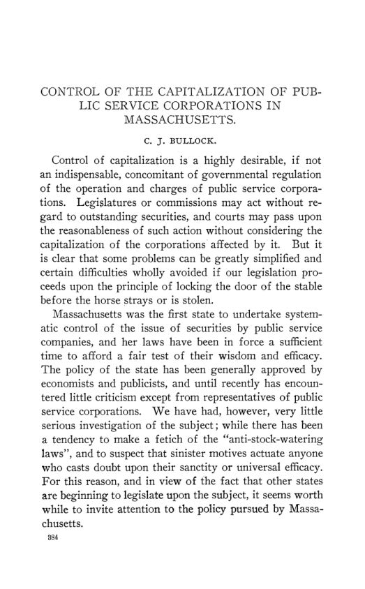

Atlantic City, 1908: sindicatos, acidentes, tarifas e o banco central
Leitura: 12 min
Atlantic City, dezembro de 1908: Patten pede economistas mais concisos, Clark testa o sindicato sem monopólio, Crystal Eastman mede o custo dos acidentes e Warburg propõe um banco central.


Simon N. Patten abriu o discurso presidencial com uma lembrança. Vinte e três anos antes, os fundadores da associação se reuniram em Saratoga sem um único livro publicado, sem revista e sem cargo universitário que os amparasse. Agora a economia estava em todas as faculdades e na boca de todos. Patten não se deu por satisfeito: nenhum grande problema americano, disse, fora resolvido. A pergunta que deixou à plateia era se os economistas dominavam o problema ou apenas seguiam a correnteza.
A vigésima primeira reunião anual aconteceu em Atlantic City, Nova Jersey, de 28 a 31 de dezembro de 1908. Os trabalhos saíram em abril de 1909 como nº 1 do vol. 10 da terceira série do Quarterly. O manual da associação ficou para o nº 2 do mesmo volume; este número traz só o programa. São 37 textos: o discurso de Patten e sua discussão, uma sessão sobre negociação coletiva, uma mesa-redonda de contabilidade, três trabalhos sobre legislação trabalhista e seguro de acidentes, o caso canadense das disputas industriais, uma sessão sobre renda, indústria e família, economia agrícola e geografia econômica, transporte fluvial, revisão tarifária, banco central e o controle do capital das concessionárias de Massachusetts.
O que Patten pediu aos economistas?
Concisão. Para Patten, a essência da literatura econômica está nos contrastes, nas frases e nos diagramas que sobrevivem aos livros. Da Riqueza das Nações, disse, ficaram a oposição entre simpatia e interesse próprio e a tríade terra, trabalho e capital; o resto poderia caber numa página. Criticou a tese de trezentas páginas, que cansa o leitor com fatos acumulados, e propôs transformar a pós-graduação de escola de acumulação em escola de expressão. O economista deveria ter instintos de contador e de cartunista, escrever para jornais e revistas e aliar-se ao direito, a única ciência social que, segundo ele, avançou só por evolução. Terminou com uma ordem de progresso: primeiro o economista, depois o jornalista, por fim o legislador.
“O mundo é nosso se entrarmos pela porta certa.” (“The world is ours if we enter it by the right door.”)
Os debatedores concordaram com o diagnóstico e divergiram do remédio. J. E. Hagerty defendeu a pesquisa de campo no mundo dos negócios, mas recusou a ideia de que um bom debatedor seja melhor economista que o autor de uma tese. F. B. Hawley respondeu que o remédio não é menos teoria, e sim mais e melhor teoria. Edward T. Devine rejeitou a acusação de pessimismo feita ao discurso: quem aponta o defeito e indica o remédio, disse, é otimista.
Um sindicato sem monopólio eleva os salários?
J. B. Clark separou dois sindicatos. O que fecha o ofício e exclui rivais é um monopólio e, como o monopólio do capital, empurra os excluídos para empregos menos produtivos. A questão que lhe interessava era o sindicato aberto, que não recorre à violência. Sua resposta foi afirmativa: a greve, real ou apenas possível, pressiona o empregador que quer ampliar a produção, e o sindicato espalha depressa a alta de salários que as empresas mais avançadas concederiam de qualquer modo. O limite é a produtividade. Nenhuma organização sustenta uma alta de salários que não se apoie em alta da produtividade geral, e uma exigência acima do produto marginal do trabalho gera desemprego.
A. C. Miller registrou que, em menos de uma geração, a atitude dos economistas diante do sindicalismo passara da dúvida à tolerância. G. E. Barnett objetou que ninguém mede o produto marginal com exatidão suficiente para orientar uma negociação. T. S. Adams descreveu um negociador de ferrovia, o supervisor de salários, cuja produtividade para a empresa consistia em comprar trabalho barato, e concluiu que a teoria da produtividade precisa incluir a habilidade de barganhar.
A contabilidade pertence à economia?
W. M. Cole lembrou que, dez anos antes, nenhuma faculdade oferecia contabilidade como parte da formação liberal; agora cerca de uma dúzia o fazia, um terço delas desde o ano anterior. Maurice H. Robinson descreveu o contador como o colaborador quantitativo do economista e propôs um demonstrativo de resultados que separasse renda da terra, juros e salários. J. C. Duncan distinguiu escrituração de contabilidade e criticou exames de certificação que pediam quebra-cabeças. J. E. Sterrett comparou a profissão americana, recente, à escocesa e à inglesa e previu a responsabilidade civil do auditor. Na discussão, Simon Litman negou que a contabilidade fosse ciência estatística, porque não estuda fenômenos de massa.
Quem paga o acidente de trabalho?
H. W. Farnam classificou as leis trabalhistas em três tipos: as protetoras, que proíbem; as distributivas, como o seguro compulsório, que obrigam; e as permissivas, que autorizam sindicatos e cooperativas. Usou a lei de Gresham como analogia: assim como o Estado retirou de circulação a moeda leve, a lei de trabalho infantil fez com que uma criança de dez anos deixasse de ter curso legal no mercado de trabalho. Crystal Eastman trouxe os números do condado de Allegheny e concluiu que quase toda a perda recai sobre o trabalhador e sua família. M. O. Lorenz propôs para Wisconsin um fundo estadual de acidentes, pago por licenças cobradas dos empregadores de atividades perigosas.
A renda basta para sustentar a família?
R. C. Chapin partiu de uma pesquisa de 1907 em Nova York, com 391 famílias, para testar as regularidades de Engel: a fatia da comida cai à medida que a renda sobe. Concluiu que, quando o pai não ganha o bastante e a família recorre a inquilinos ou ao trabalho da mãe e dos filhos, o padrão de vida cai. Margaret F. Byington descreveu Homestead, cidade de uma só usina de aço, onde só há trabalho para homens. Edward T. Devine apresentou os resultados do levantamento de Pittsburgh: excesso de trabalho, com turnos de doze horas sete dias por semana, salários baixos, salários ainda menores para mulheres e capital ausente. Kenyon L. Butterfield defendeu a família rural, apesar do isolamento.
Uma lei pode evitar greves sem proibi-las?
A. Shortt presidira onze juntas de conciliação criadas pela lei canadense de 1907, conhecida como Lemieux Act. A lei não impõe arbitragem: exige apenas que, antes de uma greve ou locaute em serviços de utilidade pública, a disputa passe por uma junta de três membros, com poder de ouvir testemunhas e examinar livros. Se não houver acordo, o relatório é publicado. Shortt atribuiu o êxito ao tato dos membros e às conversas reservadas. O. D. Skelton destacou que a lei apenas complementa a negociação coletiva; Victor S. Clark duvidou de que a opinião pública, sozinha, impedisse greves.
Como rever a tarifa?
H. C. Emery sustentou que a influência da tarifa protecionista fora exagerada pelos dois lados e que o argumento do consumidor fracassara historicamente: as pessoas pensam como produtoras. A redução viria quando os próprios produtores, em busca de mercados externos, a pedissem. Propôs, por isso, trocar a campanha pelo livre-comércio por uma agitação a favor da reciprocidade. N. I. Stone comparou a tarifa convencional alemã à de máximo e mínimo francesa e preferiu esta última, nos moldes de uma seção da lei Dingley ampliada. Simon Litman ligou a revisão a dois motivos: preços de monopólio dentro do país e a necessidade de vender manufaturas fora.
Os Estados Unidos precisavam de um banco central?
P. M. Warburg propôs um departamento central de emissão em Washington, que descontaria papéis comerciais endossados por associações de moeda regionais e emitiria notas cobertas por ouro ou por esses papéis, com ao menos um terço em ouro ou moeda legal. O conselho teria dois governadores, mantidos no cargo independentemente do partido no poder. Warburg evitou chamar a instituição de banco central e rejeitou tanto o modelo canadense, de poucos bancos com agências, quanto os esquemas automáticos baseados num imposto. Sua conclusão sobre a crise de 1907:
“tínhamos prosperado apesar do nosso sistema, não por causa dele” (“we had been prospering in spite of our system, not in consequence of it”)
O. M. W. Sprague duvidou de que a experiência europeia servisse a um país que proíbe agências bancárias e tem milhares de bancos isolados. Para ele, o defeito central não era a falta de reservas, e sim a recusa em usá-las na crise, por apego a uma proporção legal fixa. Horace White descreveu a compra de moeda com ágio durante o pânico e defendeu um banco central de emissão sob controle do governo. A. Piatt Andrew relatou o trabalho da Comissão Monetária Nacional, que entrevistara banqueiros na Inglaterra, na Alemanha e na França.
“a reserva existe para ser usada, não entesourada e aumentada, em tempo de crise” (“a reserve is to be used, not hoarded and increased, in time of crisis”)
O que mais entrou no programa?
Edward Van Dyke Robinson defendeu que a geografia econômica é parte da economia, não da geografia. John Lee Coulter propôs que os agricultores assumissem, por cooperativas, a comercialização dos produtos. Emory R. Johnson previu que o custo ferroviário não cairia e que hidrovias e ferrovias se tornariam mais complementares com o crescimento da população. C. J. Bullock examinou a regra de Massachusetts que obriga concessionárias a emitir ações só em dinheiro e ao valor de face, e concluiu que ela funcionou, mas ficou rígida demais em alguns pontos.
Na minha leitura
Na minha leitura, a reunião de 1908 expõe uma tensão de método que atravessa o volume. Patten pede contrastes curtos e diagramas; Devine, Kellogg, Eastman e Chapin mostram o que só o levantamento sistemático de muitos casos revela, como a distribuição real da perda num acidente fatal ou o custo de uma epidemia por família. Os dois lados não se excluem. A frase que Patten valoriza só convence quando um número a sustenta, e o número só circula quando alguém o resume numa frase. A discussão entre Clark e Barnett reproduz o problema na teoria: o produto marginal ordena o raciocínio, mas não fornece a cifra de que um negociador precisa.
A sessão sobre banco central antecipa um dilema permanente: instituição nova ou regra melhor. Warburg quer um órgão capaz de julgar caso a caso, com limites estritos; Sprague acha que o mesmo resultado viria de usar as reservas existentes e de mudar o costume. Ambos concordam sobre o diagnóstico, que é a escassez de liquidez num pânico. O que os separa é a confiança no julgamento de uma diretoria contra a confiança em mudar o comportamento de milhares de bancos isolados.
Glossário
- Negociação coletiva
- negociação de salários e condições de trabalho entre empregadores e um grupo organizado de trabalhadores.
- Produto marginal do trabalho
- acréscimo de produção obtido com o último trabalhador empregado; na teoria de Clark, o padrão para o salário.
- Lei de Gresham
- tendência de a moeda de pior qualidade expulsar a melhor da circulação.
- Responsabilidade do empregador (employers' liability)
- regra pela qual o empregador só indeniza o acidentado quando se prova sua culpa, em geral por processo judicial.
- Seguro compulsório de acidentes
- sistema em que a lei obriga o financiamento de indenizações predefinidas, sem discussão de culpa.
- Junta de conciliação e investigação
- comissão de três membros prevista na lei canadense para examinar uma disputa antes de greve ou locaute.
- Lei de Engel
- regularidade segundo a qual a fatia da renda gasta com comida cai à medida que a renda familiar sobe.
- Tarifa convencional
- tarifa única aprovada pelo Legislativo e reduzida por tratados negociados pelo Executivo.
- Tarifa de máximo e mínimo
- duas tabelas fixadas pelo Legislativo; a mínima é aplicada aos países que oferecem concessões equivalentes.
- Reciprocidade
- troca de reduções tarifárias entre países.
- Dumping
- venda no exterior a preços menores que os praticados no mercado doméstico.
- Associação de moeda (currency association)
- grupo regional de bancos que, no plano de Warburg, endossaria papéis comerciais para redesconto.
- Suspensão dos pagamentos em dinheiro
- recusa dos bancos em converter depósitos em moeda corrente durante um pânico.
- Emissão ao par
- venda de ações por exatamente o seu valor de face.
Artigos desta edição
- The Making of Economic Literature. Annual Address of the President — Simon N. Patten; discurso presidencial (pp. 1–14). Patten parte do contraste entre os fundadores de 1885, sem livros nem revistas, e a popularidade da economia em 1908, para afirmar que nenhum grande problema americano fora resolvido. Sustenta que a literatura econômica vive de contrastes, frases e diagramas, não de tratados volumosos, e critica a tese de trezentas páginas, a pesquisa de biblioteca e a reputação obtida por publicações sem leitores. Propõe que a pós-graduação forme para a expressão, para o ensino, as revistas e o jornalismo, e que a economia se aproxime do direito. Conclui com a sequência economista, jornalista, legislador. JSTOR
- Economic Literature: Discussion — J. E. Hagerty, F. B. Hawley, T. N. Carver, Scott Nearing e Edward T. Devine (pp. 15–23). Hagerty defende investigação de campo no mundo dos negócios e uma comissão tarifária de economistas, mas discorda de que o debatedor seja melhor economista que o autor de tese. Hawley pede mais e melhor teoria e um consenso sobre termos fundamentais. Carver e Nearing tratam do prestígio e do ensino da disciplina; Devine rejeita a acusação de pessimismo feita ao discurso. JSTOR
- The Theory of Collective Bargaining — J. B. Clark (pp. 24–39). Clark pergunta se sindicatos abertos, sem monopólio do ofício e sem violência, aproximam os salários do padrão dado pela produtividade. Considera o monopólio sindical tão nocivo quanto o do capital, porque empurra os excluídos para empregos menos produtivos. Argumenta que a greve, efetiva ou potencial, pressiona o empregador que quer ampliar a produção, e que o sindicato difunde rapidamente as altas de salário das empresas mais avançadas. Enumera dez proposições: a exigência salarial deve evitar desemprego, ser cautelosa na depressão e respeitar o progresso, pois nenhuma organização sustenta salário acima da produtividade geral. JSTOR
- Theory of Collective Bargaining: Discussion — A. C. Miller, G. E. Barnett, T. S. Adams e C. W. Doten (pp. 40–58). Miller vê a negociação coletiva como corolário da concorrência industrial, assim como os trustes. Barnett nega que o produto marginal possa ser medido com precisão útil para negociar. Adams sustenta que a teoria da produtividade deve incluir a habilidade de barganhar; Doten lê no artigo o reconhecimento implícito de que o trabalho era explorado. JSTOR
- Accounting: Round Table Discussion — W. M. Cole (presidente) (pp. 59–61). Cole abre a mesa lembrando que a contabilidade, ausente das faculdades dez anos antes, já era oferecida por cerca de uma dúzia delas, e propõe três questões: sua relação com a economia, sua definição e o futuro da profissão. JSTOR
- Accounting in Its Relation to Economics — Maurice H. Robinson (pp. 62–74). Robinson parte de uma definição do contador escocês Lisle e descreve a contabilidade como o ramo quantitativo da ciência da riqueza: o economista analisa a produção e a distribuição, o contador mede a contribuição e a parcela de cada fator. Observa que economistas raramente dominam contabilidade e que os demonstrativos, feitos para proteger o proprietário, pouco servem à análise econômica. Propõe cursos de contabilidade nos departamentos de economia, exame de contabilidade para doutorandos, formação econômica para contadores certificados e um demonstrativo que separe renda da terra, juros e salários. JSTOR
- A Definition of Accounting — J. C. Duncan (pp. 75–84). Duncan lembra que David Kinley consultou cinquenta contadores públicos e recebeu cerca de quarenta definições diferentes da profissão. Critica exames estaduais de certificação que exigiam quebra-cabeças em vez de problemas e separa a escrituração, que termina no balancete, da contabilidade. Divide os registros em financeiros e gerenciais, estes voltados a custos e eficiência por departamento. Propõe definir a contabilidade como a ciência que registra as transações e interpreta os registros para dar ao leigo uma visão clara da situação financeira e gerencial da empresa. JSTOR
- The Present Position and Probable Development of Accountancy As a Profession — J. E. Sterrett (pp. 85–96). Sterrett compara a contabilidade americana, profissão de poucas décadas, à escocesa, reconhecida havia mais de um século, e à inglesa, com ao menos cinco mil profissionais em duas sociedades. Registra que o trabalho dos contadores públicos nos Estados Unidos ao menos quadruplicara em dez anos e que a legislação apenas reconhecia o título de contador certificado. Descreve o estágio britânico de três a cinco anos sem salário e o papel incipiente das escolas universitárias. Prevê a responsabilidade civil do auditor e uma profissão equiparada às mais antigas. JSTOR
- Round Table on Accounting: Discussion — B. M. Rastall, A. M. Sakolski, Leon Brummer, O. M. W. Sprague e Simon Litman (pp. 97–104). Rastall compara a contabilidade à geometria e defende seu lugar na universidade. Sakolski aponta o conflito entre a regra contábil do custo ou mercado, o menor, e a noção econômica de valor. Brummer insiste em escolas de contabilidade; Sprague distingue valorizações de terrenos com e sem efeito sobre lucros; Litman nega que a contabilidade seja ciência estatística. JSTOR
- Some Fundamental Distinctions in Labor Legislation — H. W. Farnam (pp. 105–118). Farnam retoma o discurso de Ely na primeira reunião da American Association for Labor Legislation e pede discriminação entre tipos de lei. Classifica a legislação trabalhista em protetora, que fixa condições de trabalho; distributiva, como seguro compulsório e responsabilidade do empregador, que altera os termos da troca; e permissiva, que autoriza sindicatos, cooperativas e arbitragem voluntária. Recorre à lei de Gresham: a lei protetora cria um padrão, como a lei monetária, e muda as condições da concorrência sem suprimi-la. Adverte que leis distributivas trazem o risco de transferências gratuitas e conclui pedindo atenção à geração futura. JSTOR
- The American Way of Distributing Industrial Accident Losses: A Criticism — Crystal Eastman (pp. 119–134). Eastman examina a distribuição da perda causada por acidentes industriais a partir do levantamento de Pittsburgh. Mostra que, entre 304 trabalhadores mortos que sustentavam outras pessoas no condado de Allegheny, 88 famílias nada receberam e só uma minoria obteve mais de US$ 500. Calcula que a indenização de seis inválidos permanentes cobriu 4% da renda perdida e que a caridade organizada quase não participou. Critica o regime de culpa por injusto, dispendioso e inútil para prevenir acidentes. Pede indenização compulsória, uniforme e suficiente, independente de contrato entre empregador e empregado. JSTOR
- What Form of Workingmen's Accident Insurance Should Our States Adopt? — M. O. Lorenz (pp. 135–151). Lorenz toma como dada a conveniência do seguro de acidentes e pergunta que forma ele deve ter, com foco em Wisconsin. Arrola argumentos: prevenção, como no fundo da South Metropolitan Gas Company de Londres, cujos acidentes por mil caíram de 82 em 1898 para 37 em 1906; o desperdício dos processos, como uma indenização de US$ 6.500 da qual US$ 3.500 foram para advogados; injustiça e atrito. Propõe uma junta estadual que emita licenças de atividade perigosa, com taxa conforme o risco e a folha, metade descontável dos salários, e um fundo que pague metade do salário, com processo restrito à negligência grave. JSTOR
- Workingmen's Accident Insurance: Discussion — F. L. Hoffman, Charles R. Henderson, Lee K. Frankel e John Martin (pp. 152–157). Hoffman julga o plano de Lorenz engenhoso mas impraticável e pede mais fatos. Henderson explica que o projeto de Illinois visava educar a opinião pública. Frankel acha os fatos já suficientes; Martin pergunta se empregadores não exigiriam que os empregados renunciassem ao seguro. JSTOR
- The Canadian Industrial Disputes Act — A. Shortt (pp. 158–173). Shortt relata a experiência de presidente de onze juntas de conciliação e investigação criadas pela lei canadense de 1907, conhecida como Lemieux Act e redigida em grande parte por Mackenzie King. A lei, restrita a serviços de utilidade pública, não impõe arbitragem: exige que a disputa passe por uma junta de três membros antes de greve ou locaute e prevê a publicação do relatório. Shortt descreve como convenceu partes recalcitrantes a participar, prefere audiências reservadas, longe da imprensa, e conclui que a lei, bem conduzida, obtém o máximo de concessão com o mínimo de compulsão. JSTOR
- The Canadian Industrial Disputes Act: Discussion — O. D. Skelton e Victor S. Clark (pp. 174–179). Skelton destaca que a lei complementa a negociação coletiva e depende do pessoal das juntas. Clark lembra greves na Nova Zelândia e na Austrália apesar da arbitragem compulsória e vê o valor da lei no órgão de negociação, não na opinião pública. JSTOR
- The Influence of Income on Standards of Life — R. C. Chapin (pp. 180–192). Chapin examina como o montante e a origem da renda afetam o padrão de vida, com base numa pesquisa de 1907 em Nova York, com 391 famílias, 318 delas com renda entre US$ 600 e US$ 1.100. Retoma as tabelas de Engel e outras pesquisas: a fatia da comida cai com a renda, enquanto crescem os gastos culturais; em Nova York, a fatia do aluguel também cai. Mostra que, nos grupos de renda mais alta, a renda familiar costuma combinar o salário do pai com inquilinos ou trabalho de mulheres e filhos. Conclui que, nesses casos, o padrão de salários não alcança o padrão de vida. JSTOR
- The Family in a Typical Mill Town — Margaret F. Byington (pp. 193–206). Byington resume seis meses de pesquisa sobre o custo de vida em Homestead, cidade de cerca de 25 mil habitantes formada em torno da usina de aço. Mostra que a cidade só oferece trabalho a homens, com salário mínimo de US$ 1,65 por dia para o trabalhador comum e trabalho regular, e que por isso as mulheres ficam em casa. Examina moradia, inquilinos, poupança e jornadas longas. Conclui que, numa cidade de uma só indústria, o tipo de família é determinado pela indústria e que, sem salário suficiente, até a poupança pode tornar-se prejudicial. JSTOR
- Results of the Pittsburgh Survey — Edward T. Devine (pp. 207–216). Devine apresenta o levantamento de Pittsburgh como experimento de método: uma equipe sob direção comum estudando a comunidade inteira num período definido, em vez de um observador isolado. Cita resultados imediatos, como novas instituições de caridade e de saneamento. Enumera os achados adversos: excesso de trabalho, com turnos de doze horas sete dias por semana; salários baixos; salários femininos ainda menores; capital ausente; e mais de mil vidas perdidas em um ano por tifoide e acidentes. Registra também avanços recentes na cidade e responde de forma afirmativa que a indústria moderna e a vida urbana eram desfavoráveis à família. JSTOR
- Are Modern Industry and City Life Unfavorable to the Family? — Charles R. Henderson (pp. 217–232). Henderson reformula a pergunta: quais condições urbanas prejudicam a família e se podem ser corrigidas por meios conhecidos. Examina mortalidade e doença nas cidades, doenças ocupacionais e a falta de seguro, que considera o próximo passo lógico depois da lei dos pobres e da educação compulsória. Trata da moradia, da natalidade, da vida coletiva nas fábricas, das vantagens culturais da cidade, do divórcio e das doenças venéreas e do álcool. Conclui que nenhum desses males pertence ao destino: todos resultam de escolhas humanas e podem ser reduzidos com ciência e esforço. JSTOR
- Rural Life and the Family — Kenyon L. Butterfield (pp. 233–238). Butterfield aponta o isolamento como traço central da vida rural, da classe agrícola e de cada família. Destaca que a família do campo é unidade de produção e tem unidade cooperativa; registra como desvantagens o saneamento precário, a falta de recreação, a renda irregular e um individualismo que empobrece a vida social. Conclui que, no conjunto, as vantagens do campo para a família superam as desvantagens. JSTOR
- Modern Industry and Family Life: Discussion — Paul U. Kellogg (pp. 239–246). Kellogg propõe aplicar a famílias normais os métodos de registro das sociedades de caridade, como fez o levantamento de Pittsburgh, e cita o estudo econômico da febre tifoide em seis distritos. Pede autoridades sanitárias fortes e formas de habitação e indenização que não prendam o trabalhador a um empregador. JSTOR
- Economic Geography: An Attempt to State What It Is and What It Is Not — Edward Van Dyke Robinson (pp. 247–257). Robinson traça a passagem da geografia descritiva, de listas de rios e capitais, à geografia baseada na adaptação ao ambiente, depois de Ritter e da revolução darwiniana. Define a geografia econômica como o estudo da adaptação consciente do homem ao ambiente sob motivos econômicos. Lembra que a disciplina escolar nasceu de compêndios práticos para comerciantes. Conclui que ela é parte integrante da economia, base física da teoria, e deve ser ensinada por economistas, distinguindo-a da economia agrícola, limitada a um grupo de indústrias. JSTOR
- Coöperation in the Marketing of Agricultural Produce — John Lee Coulter (pp. 258–265). Coulter sustenta que o agricultor precisa de renda líquida maior para usar escolas, estradas e correio rural, e que ela não deve vir de preços mais altos ao consumidor, mas de economia na produção, entendida como toda a cadeia até o consumidor, comercialização incluída. Critica o sistema de comissionários e especuladores, caro e sujeito a abusos, e cita as bolsas cooperativas de frutas. Conclui que, com cooperação eficaz, os próprios produtores poderiam administrar a maior parte da comercialização, com ganhos econômicos e sociais. JSTOR
- Agricultural Economics: Discussion — J. B. Morman e T. N. Carver (pp. 266–274). Morman sustenta que a cooperação avança mais entre produtos perecíveis, como leite, ovos e frutas. Carver distingue a cooperação verdadeira, entre os que fazem o trabalho, da quase-cooperação, que apenas busca obter serviços mais baratos. JSTOR
- Water Transportation in This Country: Round Table Discussion — F. H. Dixon (presidente) (pp. 275–276). Dixon abre a mesa com as perguntas em jogo: subsídio público às hidrovias, viabilidade técnica, competência federal ou estadual e a escala de um eventual programa financiado por títulos. JSTOR
- Factors Affecting the Future of Water Transportation in the United States — Emory R. Johnson (pp. 277–283). Johnson atribui o declínio das hidrovias à concorrência ferroviária e à perda de navegabilidade causada pelo desmatamento e pelo assoreamento. Argumenta que o custo ferroviário dificilmente cairá e que as ferrovias tenderão a priorizar cargas rápidas em pequenos lotes, o que encarece o serviço. Propõe como lei que a vantagem de usar ferrovias e hidrovias juntas cresce com a população e a especialização. Conclui que a conservação dos recursos hídricos, para irrigação, energia e navegação, favorecerá o uso das hidrovias. JSTOR
- Water Transportation: Discussion — C. J. Bullock e Stuart Daggett (pp. 284–286). Bullock adverte que obras públicas costumam custar de 50% a 200% acima do orçado e defende pedágios e projetos autossustentáveis. Daggett aponta os terminais, e não as linhas, como o gargalo do transporte. JSTOR
- The Best Way to Work for Tariff Revision — H. C. Emery (pp. 287–300). Emery propõe nove proposições práticas para a revisão tarifária. Considera exagerada a influência econômica da tarifa e grave sobretudo seu efeito moral sobre o Legislativo. Sugere avaliar cada item: há tarifas nominais, tarifas que só sustentam lucros e tarifas cuja retirada fecharia empresas. Afirma que o argumento do consumidor fracassou historicamente porque as pessoas pensam como produtoras, e que a redução virá quando produtores exportadores buscarem mercados externos. Recomenda suspender a propaganda do livre-comércio em favor da reciprocidade e alerta para o risco de guerra tarifária com a Alemanha. JSTOR
- Dual Tariff Systems — N. I. Stone (pp. 301–313). Stone compara os dois tipos de tarifa dual europeus. A convencional, adotada pela Alemanha e outros países, fixa uma tarifa reduzida por tratados; a de máximo e mínimo, da França, Espanha, Grécia e Noruega, fixa duas tabelas no Legislativo. Mostra que a rigidez desta última levou a guerras tarifárias e a cortes abaixo do mínimo legal, com a Noruega como exceção. Recomenda um sistema de máximo e mínimo nos moldes da seção 3 da lei Dingley, ampliada à maior parte da tarifa, combinando controle legislativo das alíquotas e flexibilidade do Executivo. JSTOR
- Tariff Revision and Foreign Markets — Simon Litman (pp. 314–325). Litman observa que as exportações americanas eram sobretudo alimentos e matérias-primas: em 1908, de US$ 1,83 bilhão exportados, US$ 488 milhões eram manufaturas. Argumenta que a exportação de alimentos tenderia a cair e que a indústria precisaria de mercados externos estáveis, já que o dumping não pode ser permanente. Atribui a agitação pela revisão a dois motivos, preços de monopólio internos e busca de mercados, e propõe combinar redução de tarifas com acordos recíprocos, porque cada medida isolada beneficia apenas um dos lados. Termina perguntando se os legisladores têm o conhecimento necessário. JSTOR
- Tariff Revision: Discussion — C. W. Mixter, J. W. Crook e U. G. Weatherly (pp. 326–337). Mixter examina uma a uma as nove proposições de Emery, apoiando a cautela gradual. Crook defende aliar-se aos fabricantes que querem mercados externos. Weatherly trata a tarifa como leme, não como remo, e propõe usá-la para sustentar padrões sociais. JSTOR
- Central Bank of the United States — P. M. Warburg (pp. 338–358). Warburg dá por assente a superioridade do sistema de banco central e explica o papel da taxa de desconto e de um mercado amplo de papel comercial endossado. Propõe resgatar as notas lastreadas em títulos públicos e criar um departamento central de emissão em Washington, que descontaria papéis endossados por associações regionais de moeda e emitiria notas com ao menos um terço de cobertura em ouro ou moeda legal. O conselho elegeria dois governadores, e o capital seria de US$ 100 milhões, com dividendos limitados. Rejeita o modelo canadense e os esquemas automáticos de imposto e conclui que a crise de 1907 tornou o sistema indispensável. JSTOR
- Central Banks — O. M. W. Sprague (pp. 359–369). Sprague argumenta que um banco central americano enfrentaria tarefas diferentes das europeias: um superávit federal grande e irregular e milhares de bancos sem agências, entre os quais teria de repartir crédito. Duvida da utilidade da emissão de notas num país que usa cheques. Localiza o defeito central na recusa em usar reservas na crise: em 1907, os bancos de Nova York suspenderam pagamentos com US$ 224 milhões em caixa, enquanto o Banco da Inglaterra seguiu pagando com US$ 85 milhões. Propõe proibir juros sobre depósitos de bancos e aceitar o uso das reservas em emergências. JSTOR
- Central Bank: Discussion — Horace White (pp. 370–376). White descreve os efeitos das suspensões bancárias, como a compra de moeda com ágio durante o pânico, e defende um banco central de emissão sob controle do governo, que serviria também de câmara de informações sobre as necessidades financeiras do país. JSTOR
- The Work of the National Monetary Commission — A. Piatt Andrew (pp. 377–383). Andrew descreve o trabalho preparatório da Comissão Monetária Nacional, criada depois da lei Aldrich-Vreeland. Uma subcomissão passou cerca de três meses na Inglaterra, na Alemanha e na França, com entrevistas taquigrafadas a dirigentes de bancos centrais e privados, monografias encomendadas a especialistas e estatísticas comparativas. A comissão planejava também um balanço uniforme e simultâneo de todos os bancos do país. Conclui que o material seria público e que a reforma teria de alcançar cerca de 7.000 bancos nacionais e 12.000 outros bancos. JSTOR
- Control of the Capitalization of Public Service Corporations in Massachusetts — C. J. Bullock (pp. 384–414). Bullock examina a política de Massachusetts, primeiro estado a controlar sistematicamente a emissão de títulos das concessionárias: ações só em dinheiro e ao valor de face, sem dividendos em ações. Conclui que a regra deu estabilidade e reputação às empresas, com capitalização das ferrovias urbanas inferior à metade da média nacional em 1902, mas que a proibição de emitir abaixo do par dificulta a recuperação de empresas em dificuldade. Discute as regras de emissão ao preço de mercado e ao par e defende que o investidor ganhe bem mais do que os juros de caderneta, sob pena de estagnação. JSTOR
- Capitalization of Corporations: Discussion — F. J. Swayze, Milo R. Maltbie, E. D. Durand, W. Z. Ripley, Richard T. Ely, Edward W. Bemis e C. J. Bullock (pp. 415–430). Swayze relata a dificuldade de provar supercapitalização em Nova Jersey; Maltbie se opõe a abolir a regra do par; Durand trata dos interesses adquiridos; Ripley atribui parte dos problemas às próprias empresas. Ely descreve a prática da comissão de Wisconsin, Bemis critica a escala móvel nas tarifas de gás, e Bullock responde. JSTOR
Fontes
- The Making of Economic Literature. Annual Address of the President (pp. 1–14). JSTOR · Internet Archive (PDF)
- Economic Literature: Discussion (pp. 15–23). JSTOR · Internet Archive (PDF)
- The Theory of Collective Bargaining (pp. 24–39). JSTOR · Internet Archive (PDF)
- Theory of Collective Bargaining: Discussion (pp. 40–58). JSTOR · Internet Archive (PDF)
- Accounting: Round Table Discussion (pp. 59–61). JSTOR · Internet Archive (PDF)
- Accounting in Its Relation to Economics (pp. 62–74). JSTOR · Internet Archive (PDF)
- A Definition of Accounting (pp. 75–84). JSTOR · Internet Archive (PDF)
- The Present Position and Probable Development of Accountancy As a Profession (pp. 85–96). JSTOR · Internet Archive (PDF)
- Round Table on Accounting: Discussion (pp. 97–104). JSTOR · Internet Archive (PDF)
- Some Fundamental Distinctions in Labor Legislation (pp. 105–118). JSTOR · Internet Archive (PDF)
- The American Way of Distributing Industrial Accident Losses: A Criticism (pp. 119–134). JSTOR · Internet Archive (PDF)
- What Form of Workingmen's Accident Insurance Should Our States Adopt? (pp. 135–151). JSTOR · Internet Archive (PDF)
- Workingmen's Accident Insurance: Discussion (pp. 152–157). JSTOR · Internet Archive (PDF)
- The Canadian Industrial Disputes Act (pp. 158–173). JSTOR · Internet Archive (PDF)
- The Canadian Industrial Disputes Act: Discussion (pp. 174–179). JSTOR · Internet Archive (PDF)
- The Influence of Income on Standards of Life (pp. 180–192). JSTOR · Internet Archive (PDF)
- The Family in a Typical Mill Town (pp. 193–206). JSTOR · Internet Archive (PDF)
- Results of the Pittsburgh Survey (pp. 207–216). JSTOR · Internet Archive (PDF)
- Are Modern Industry and City Life Unfavorable to the Family? (pp. 217–232). JSTOR · Internet Archive (PDF)
- Rural Life and the Family (pp. 233–238). JSTOR · Internet Archive (PDF)
- Modern Industry and Family Life: Discussion (pp. 239–246). JSTOR · Internet Archive (PDF)
- Economic Geography: An Attempt to State What It Is and What It Is Not (pp. 247–257). JSTOR · Internet Archive (PDF)
- Coöperation in the Marketing of Agricultural Produce (pp. 258–265). JSTOR · Internet Archive (PDF)
- Agricultural Economics: Discussion (pp. 266–274). JSTOR · Internet Archive (PDF)
- Water Transportation in This Country: Round Table Discussion (pp. 275–276). JSTOR · Internet Archive (PDF)
- Factors Affecting the Future of Water Transportation in the United States (pp. 277–283). JSTOR · Internet Archive (PDF)
- Water Transportation: Discussion (pp. 284–286). JSTOR · Internet Archive (PDF)
- The Best Way to Work for Tariff Revision (pp. 287–300). JSTOR · Internet Archive (PDF)
- Dual Tariff Systems (pp. 301–313). JSTOR · Internet Archive (PDF)
- Tariff Revision and Foreign Markets (pp. 314–325). JSTOR · Internet Archive (PDF)
- Tariff Revision: Discussion (pp. 326–337). JSTOR · Internet Archive (PDF)
- Central Bank of the United States (pp. 338–358). JSTOR · Internet Archive (PDF)
- Central Banks (pp. 359–369). JSTOR · Internet Archive (PDF)
- Central Bank: Discussion (pp. 370–376). JSTOR · Internet Archive (PDF)
- The Work of the National Monetary Commission (pp. 377–383). JSTOR · Internet Archive (PDF)
- Control of the Capitalization of Public Service Corporations in Massachusetts (pp. 384–414). JSTOR · Internet Archive (PDF)
- Capitalization of Corporations: Discussion (pp. 415–430). JSTOR · Internet Archive (PDF)
- Sumário da edição no JSTOR: American Economic Association Quarterly, 3ª série, vol. 10, nº 1.
Documento em domínio público (EUA, publicado antes de 1931), via JSTOR Early Journal Content e Internet Archive. Resumo e comentário do autor deste site, sem afiliação com a American Economic Association. Encontrou um erro? Escreva: a correção é publicada no próprio texto, com data.
← Nº 95 · O quarto Bulletin: Patten e a forma da literatura econômica Nº 97 · O Bulletin de abril de 1909: 142 teses, ferrovias e moeda →